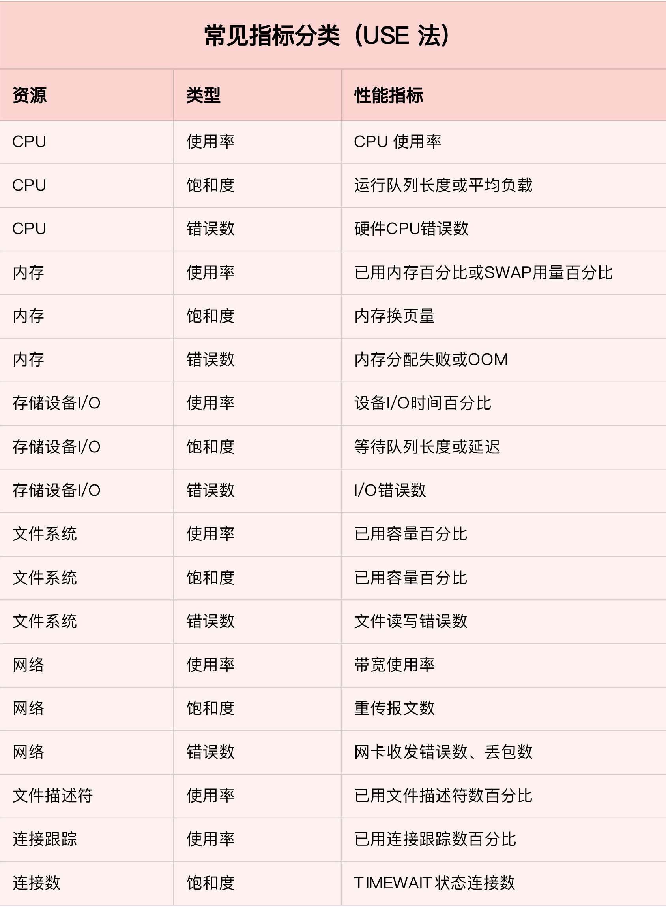
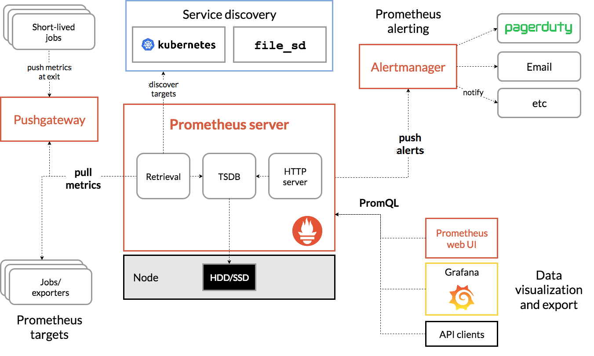
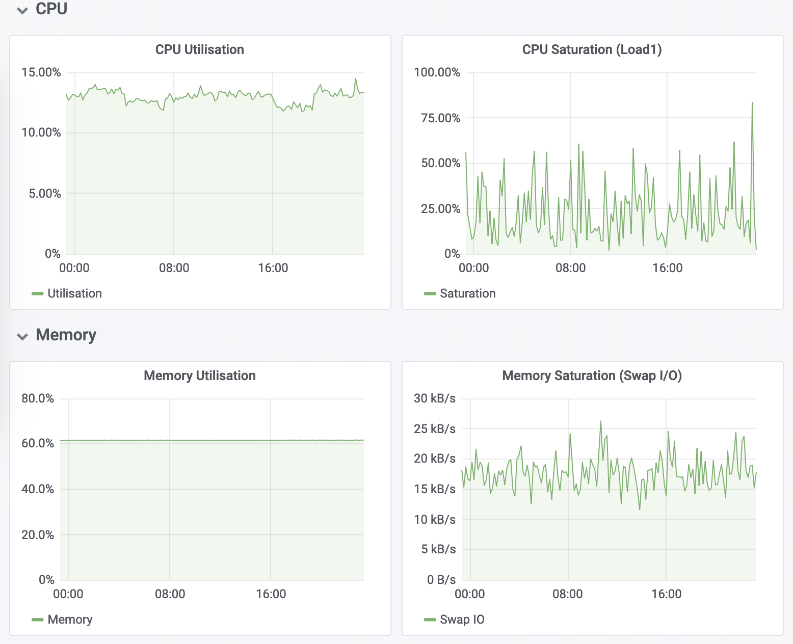

- 00 开篇词 别再让Linux性能问题成为你的绊脚石.md
- 01 如何学习Linux性能优化？.md
- 02 基础篇：到底应该怎么理解“平均负载”？.md
- 03 基础篇：经常说的 CPU 上下文切换是什么意思？（上）.md
- 04 基础篇：经常说的 CPU 上下文切换是什么意思？（下）.md
- 05 基础篇：某个应用的CPU使用率居然达到100%，我该怎么办？.md
- 06 案例篇：系统的 CPU 使用率很高，但为啥却找不到高 CPU 的应用？.md
- 07 案例篇：系统中出现大量不可中断进程和僵尸进程怎么办？（上）.md
- 08 案例篇：系统中出现大量不可中断进程和僵尸进程怎么办？（下）.md
- 09 基础篇：怎么理解Linux软中断？.md
- 10 案例篇：系统的软中断CPU使用率升高，我该怎么办？.md
- 11 套路篇：如何迅速分析出系统CPU的瓶颈在哪里？.md
- 12 套路篇：CPU 性能优化的几个思路.md
- 13 答疑（一）：无法模拟出 RES 中断的问题，怎么办？.md
- 14 答疑（二）：如何用perf工具分析Java程序？.md
- 15 基础篇：Linux内存是怎么工作的？.md
- 16 基础篇：怎么理解内存中的Buffer和Cache？.md
- 17 案例篇：如何利用系统缓存优化程序的运行效率？.md
- 18 案例篇：内存泄漏了，我该如何定位和处理？.md
- 19 案例篇：为什么系统的Swap变高了（上）.md
- 20 案例篇：为什么系统的Swap变高了？（下）.md
- 21 套路篇：如何“快准狠”找到系统内存的问题？.md
- 22 答疑（三）：文件系统与磁盘的区别是什么？.md
- 23 基础篇：Linux 文件系统是怎么工作的？.md
- 24 基础篇：Linux 磁盘I_O是怎么工作的（上）.md
- 25 基础篇：Linux 磁盘I_O是怎么工作的（下）.md
- 26 案例篇：如何找出狂打日志的“内鬼”？.md
- 27 案例篇：为什么我的磁盘I_O延迟很高？.md
- 28 案例篇：一个SQL查询要15秒，这是怎么回事？.md
- 29 案例篇：Redis响应严重延迟，如何解决？.md
- 30 套路篇：如何迅速分析出系统I_O的瓶颈在哪里？.md
- 31 套路篇：磁盘 I_O 性能优化的几个思路.md
- 32 答疑（四）：阻塞、非阻塞 I_O 与同步、异步 I_O 的区别和联系.md
- 33 关于 Linux 网络，你必须知道这些（上）.md
- 34 关于 Linux 网络，你必须知道这些（下）.md
- 35 基础篇：C10K 和 C1000K 回顾.md
- 36 套路篇：怎么评估系统的网络性能？.md
- 37 案例篇：DNS 解析时快时慢，我该怎么办？.md
- 38 案例篇：怎么使用 tcpdump 和 Wireshark 分析网络流量？.md
- 39 案例篇：怎么缓解 DDoS 攻击带来的性能下降问题？.md
- 40 案例篇：网络请求延迟变大了，我该怎么办？.md
- 41 案例篇：如何优化 NAT 性能？（上）.md
- 42 案例篇：如何优化 NAT 性能？（下）.md
- 43 套路篇：网络性能优化的几个思路（上）.md
- 44 套路篇：网络性能优化的几个思路（下）.md
- 45 答疑（五）：网络收发过程中，缓冲区位置在哪里？.md
- 46 案例篇：为什么应用容器化后，启动慢了很多？.md
- 47 案例篇：服务器总是时不时丢包，我该怎么办？（上）.md
- 48 案例篇：服务器总是时不时丢包，我该怎么办？（下）.md
- 49 案例篇：内核线程 CPU 利用率太高，我该怎么办？.md
- 50 案例篇：动态追踪怎么用？（上）.md
- 51 案例篇：动态追踪怎么用？（下）.md
- 52 案例篇：服务吞吐量下降很厉害，怎么分析？.md
- 53 套路篇：系统监控的综合思路.md
- 54 套路篇：应用监控的一般思路.md
- 55 套路篇：分析性能问题的一般步骤.md
- 56 套路篇：优化性能问题的一般方法.md
- 57 套路篇：Linux 性能工具速查.md
- 58 答疑（六）：容器冷启动如何性能分析？.md
- 加餐（一） 书单推荐：性能优化和Linux 系统原理.md
- 加餐（二） 书单推荐：网络原理和 Linux 内核实现.md
- 用户故事 “半路出家 ”，也要顺利拿下性能优化！.md
- 用户故事 运维和开发工程师们怎么说？.md
- 结束语 愿你攻克性能难关.md
53 套路篇：系统监控的综合思路
你好，我是倪朋飞。
在前面的内容中，我为你介绍了很多性能分析的原理、思路以及相关的工具。不过，在实际的性能分析中，一个很常见的现象是，明明发生了性能瓶颈，但当你登录到服务器中想要排查的时候，却发现瓶颈已经消失了。或者说，性能问题总是时不时地发生，但却很难找出发生规律，也很难重现。
当面对这样的场景时，你可能会发现，我们前面介绍的各种工具、方法都“失效“了。为什么呢？因为它们都需要在性能问题发生的时刻才有效，而在这些事后分析的场景中，我们就很难发挥它们的威力了。
那该怎么办呢？置之不理吗？其实以往，很多应用都是等到用户抱怨响应慢了，或者系统崩溃了后，才发现系统或者应用程序的性能出现了问题。虽然最终也能发现问题，但显然，这种方法是不可取的，因为严重影响了用户的体验。
而要解决这个问题，就要搭建监控系统，把系统和应用程序的运行状况监控起来，并定义一系列的策略，在发生问题时第一时间告警通知。一个好的监控系统，不仅可以实时暴露系统的各种问题，更可以根据这些监控到的状态，自动分析和定位大致的瓶颈来源，从而更精确地把问题汇报给相关团队处理。
要做好监控，最核心的就是全面的、可量化的指标，这包括系统和应用两个方面。
从系统来说，监控系统要涵盖系统的整体资源使用情况，比如我们前面讲过的 CPU、内存、磁盘和文件系统、网络等各种系统资源。
而从应用程序来说，监控系统要涵盖应用程序内部的运行状态，这既包括进程的CPU、磁盘I/O 等整体运行状况，更需要包括诸如接口调用耗时、执行过程中的错误、内部对象的内存使用等应用程序内部的运行状况。
今天，我就带你一起来看看，如何对 Linux 系统进行监控。而在下一节，我将继续为你讲解应用程序监控的思路。
USE 法
在开始监控系统之前，你肯定最想知道，怎么才能用简洁的方法，来描述系统资源的使用情况。你当然可以使用专栏中学到的各种性能工具，来分别收集各种资源的使用情况。不过不要忘记，每种资源的性能指标可都有很多，使用过多指标本身耗时耗力不说，也不容易为你建立起系统整体的运行状况。
在这里，我为你介绍一种专门用于性能监控的 USE（Utilization Saturation and Errors）法。USE 法把系统资源的性能指标，简化成了三个类别，即使用率、饱和度以及错误数。
使用率，表示资源用于服务的时间或容量百分比。100% 的使用率，表示容量已经用尽或者全部时间都用于服务。
饱和度，表示资源的繁忙程度，通常与等待队列的长度相关。100% 的饱和度，表示资源无法接受更多的请求。
错误数表示发生错误的事件个数。错误数越多，表明系统的问题越严重。
这三个类别的指标，涵盖了系统资源的常见性能瓶颈，所以常被用来快速定位系统资源的性能瓶颈。这样，无论是对 CPU、内存、磁盘和文件系统、网络等硬件资源，还是对文件描述符数、连接数、连接跟踪数等软件资源，USE 方法都可以帮你快速定位出，是哪一种系统资源出现了性能瓶颈。
那么，对于每一种系统资源，又有哪些常见的性能指标呢？回忆一下我们讲过的各种系统资源原理，并不难想到相关的性能指标。这里，我把常见的性能指标画了一张表格，方便你在需要时查看。

不过，需要注意的是，USE 方法只关注能体现系统资源性能瓶颈的核心指标，但这并不是说其他指标不重要。诸如系统日志、进程资源使用量、缓存使用量等其他各类指标，也都需要我们监控起来。只不过，它们通常用作辅助性能分析，而 USE 方法的指标，则直接表明了系统的资源瓶颈。
监控系统
掌握 USE 方法以及需要监控的性能指标后，接下来要做的，就是建立监控系统，把这些指标保存下来；然后，根据这些监控到的状态，自动分析和定位大致的瓶颈来源；最后，再通过告警系统，把问题及时汇报给相关团队处理。
可以看出，一个完整的监控系统通常由数据采集、数据存储、数据查询和处理、告警以及可视化展示等多个模块组成。所以，要从头搭建一个监控系统，其实也是一个很大的系统工程。
不过，幸运的是，现在已经有很多开源的监控工具可以直接使用，比如最常见的 Zabbix、Nagios、Prometheus 等等。
下面，我就以 Prometheus 为例，为你介绍这几个组件的基本原理。如下图所示，就是 Prometheus 的基本架构：

（图片来自 prometheus.io）
先看数据采集模块。最左边的 Prometheus targets 就是数据采集的对象，而 Retrieval 则负责采集这些数据。从图中你也可以看到，Prometheus 同时支持 Push 和 Pull 两种数据采集模式。
Pull 模式，由服务器端的采集模块来触发采集。只要采集目标提供了 HTTP 接口，就可以自由接入（这也是最常用的采集模式）。
Push 模式，则是由各个采集目标主动向 Push Gateway（用于防止数据丢失）推送指标，再由服务器端从 Gateway 中拉取过去（这是移动应用中最常用的采集模式）。
由于需要监控的对象通常都是动态变化的，Prometheus 还提供了服务发现的机制，可以自动根据预配置的规则，动态发现需要监控的对象。这在 Kubernetes 等容器平台中非常有效。
第二个是数据存储模块。为了保持监控数据的持久化，图中的 TSDB（Time series database）模块，负责将采集到的数据持久化到 SSD 等磁盘设备中。TSDB 是专门为时间序列数据设计的一种数据库，特点是以时间为索引、数据量大并且以追加的方式写入。
第三个是数据查询和处理模块。刚才提到的 TSDB，在存储数据的同时，其实还提供了数据查询和基本的数据处理功能，而这也就是 PromQL 语言。PromQL 提供了简洁的查询、过滤功能，并且支持基本的数据处理方法，是告警系统和可视化展示的基础。
第四个是告警模块。右上角的 AlertManager 提供了告警的功能，包括基于 PromQL 语言的触发条件、告警规则的配置管理以及告警的发送等。不过，虽然告警是必要的，但过于频繁的告警显然也不可取。所以，AlertManager 还支持通过分组、抑制或者静默等多种方式来聚合同类告警，并减少告警数量。
最后一个是可视化展示模块。Prometheus 的 web UI 提供了简单的可视化界面，用于执行 PromQL 查询语句，但结果的展示比较单调。不过，一旦配合 Grafana，就可以构建非常强大的图形界面了。
介绍完了这些组件，想必你对每个模块都有了比较清晰的认识。接下来，我们再来继续深入了解这些组件结合起来的整体功能。
比如，以刚才提到的 USE 方法为例，我使用 Prometheus，可以收集 Linux 服务器的 CPU、内存、磁盘、网络等各类资源的使用率、饱和度和错误数指标。然后，通过 Grafana 以及 PromQL 查询语句，就可以把它们以图形界面的方式直观展示出来。


小结
今天，我带你一起梳理了系统监控的基本思路。
系统监控的核心是资源的使用情况，包括CPU、内存、磁盘和文件系统、网络等硬件资源，以及文件描述符数、连接数、连接跟踪数等软件资源。而这些资源，都可以通过 USE 法来建立核心性能指标。
USE 法把系统资源的性能指标，简化成了三个类别，即使用率、饱和度以及错误数。 这三者任一类别过高时，都代表相对应的系统资源有可能存在性能瓶颈。
基于 USE 法建立性能指标后，还需要通过一套完整的监控系统，把这些指标从采集、存储、查询、处理，再到告警和可视化展示等串联起来。你可以基于 Zabbix、Prometheus 等各种开源的监控产品，构建这套监控系统。这样，不仅可以将系统资源的瓶颈快速暴露出来，还可以借助监控的历史，事后追查定位问题。
当然，除了系统监控之外，应用程序的监控也是必不可少的，我将在下一节课继续为你拆解。
思考
最后，我想邀请你一起来聊聊，你是怎么监控系统性能的。你通常会监控哪些系统的性能指标，又是如何搭建监控系统、如何根据这些指标来定位系统资源瓶颈的？你可以结合我的讲述，总结自己的思路。
欢迎在留言区和我讨论，也欢迎把这篇文章分享给你的同事、朋友。我们一起在实战中演练，在交流中进步。
© 2019 - 2023 Liangliang Lee. Powered by gin and hexo-theme-book.